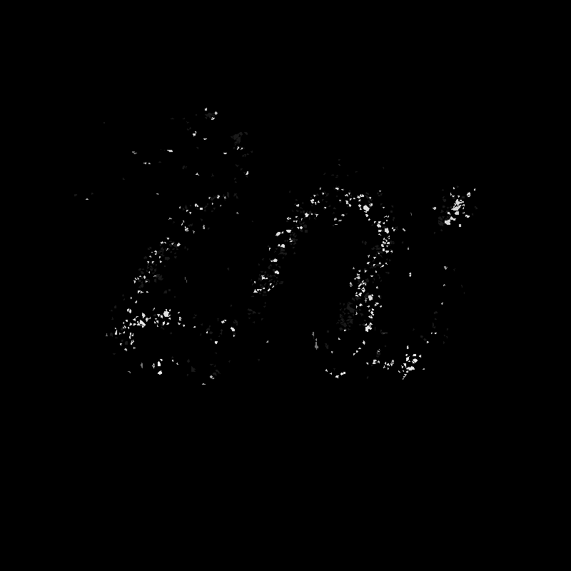
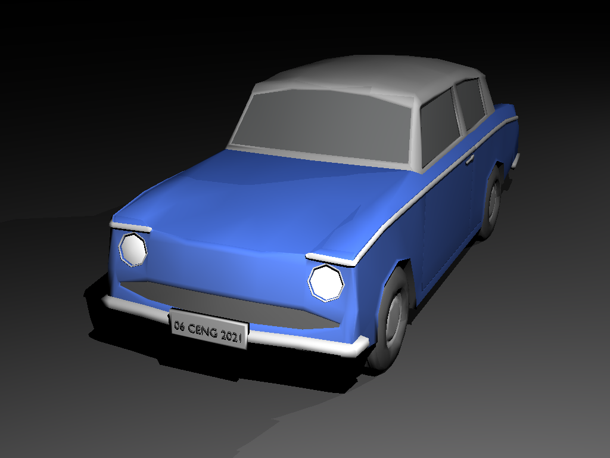
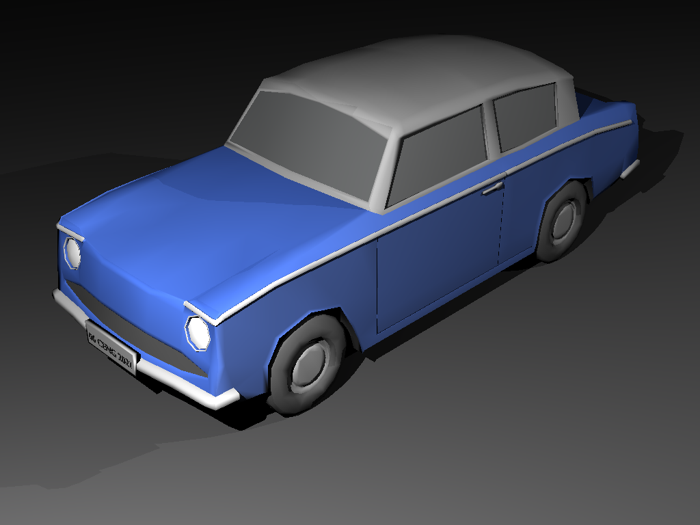

In homework 1, my render of the Chinese dragon was incorrect, as you can see below:

I realized that the broken render was caused by precision errors in my functions. My custom math library
uses SSE4 instructions for vector math, so everything runs on 128-bit registers and uses floats. Each vector
holds four floats, and all operations are done on all four components at once.
Using double would fix the issue, but doing that would require rewriting my entire math library from the
ground up. One double is 64 bits, and four doubles take 256 bits of space, which SSE4 cannot handle. I would
need to move to a newer instruction set like AVX, and that is a lot of work. I definitely do not want to
rewrite the math library.
After thinking about it for a while, I found a simpler solution. I updated my triangle intersection function
to scale the vertices by 1000 when calculating the ray intersection. With that change, I got this result:
Then I realized I had to do the same thing for the normal calculation of the triangles. I modified the
triangle class constructor so it calculates the triangle normal using the vertices multiplied by 1000. With
that change, I finally got the expected result:
I fixed the precision mistake without altering my math library.
I also implemented the smooth shading feature. Here are some samples from homework 1 rendered with smooth
shading:


My grid acceleration structure creates voxels on the x, y, and z axes by heuristically counting them based on the world size and volume. Since my plane shape has an infinite AABB, this calculation was incorrect, and any scene containing a plane ended up running with a 1x1x1 grid. I fixed the issue by excluding plane shapes from the world size calculation and handling plane intersections separately. For example, the bunny_with_plane scene originally finished in 29733 ms. After fixing the bug, it now completes in 186 ms.
windmill
davids_camera_zoom
davids_camera
davids
The performance results shown below were measured on a PC with an i5-12400F processor and 16 GB of RAM. The program ran with 12 threads during the rendering phase, SIMD optimization was active, and a uniform grid acceleration structure was used. Since my program does not use the GPU, the GPU hardware is irrelevant. These results were obtained from a single run.
| Scene | Json parse and prepare time (ms) | Render time (ms) | Save image time (ms) |
|---|---|---|---|
| marching_dragons.png | 1604 | 69150 | 164 |
| dragon_metal.png | 1513 | 13393 | 111 |
| dragon_new_right.png | 239 | 25846 | 32 |
| dragon_new_top.png | 247 | 57517 | 39 |
| dragon_new.png | 261 | 10777 | 34 |
| ellipsoids.png | 15 | 91 | 24 |
| glaring_davids.png | 502 | 4747 | 40 |
| grass_desert.png | 103 | 306749 | 107 |
| metal_glass_plates.png | 20 | 2044 | 26 |
| mirror_room.png | 19 | 223 | 42 |
| simple_transform.png | 20 | 54 | 29 |
| spheres.png | 20 | 67 | 29 |
| two_berserkers.png | 134 | 238 | 36 |
I think my only flaw in this homework is the white artifacts in the grass_desert scene rendering. I haven't determined the cause yet, but I will try to fix it in the future.